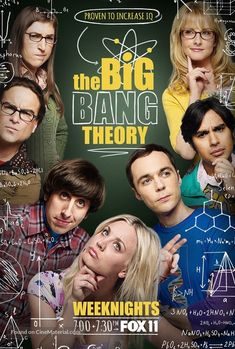
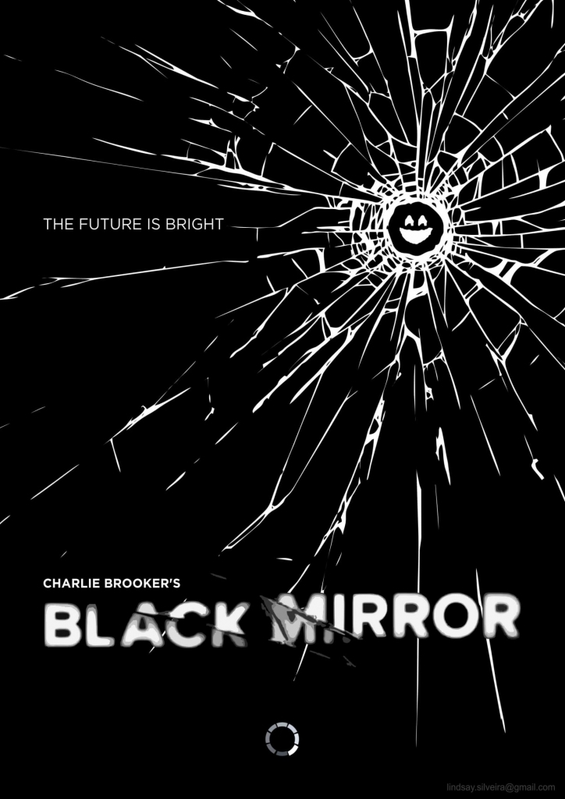

Few of my favourite tv series


Leonard Hofstadter and Sheldon Cooper are both brilliant physicists working at Cal Tech in Pasadena, California. They are colleagues, best friends, and roommates, although in all capacities their relationship is always tested primarily by Sheldon's regimented, deeply eccentric, and non-conventional ways. They are also friends with their Cal Tech colleagues mechanical engineer Howard Wolowitz and astrophysicist Rajesh Koothrappali. The foursome spend their time working on their individual work projects, playing video games, watching science-fiction movies, or reading comic books. As they are self-professed nerds, all have little or no luck with women. When Penny, a pretty woman and an aspiring actress from Omaha, moves into the apartment across the hall from Leonard and Sheldon's, Leonard has another aspiration in life, namely to get Penny to be his girlfriend.

Set in a world only minutes from our own, "Black Mirror" unveils how modern technologies can backfire and be used against their makers, every episode set in a slightly different reality with different characters combating different types of technologies.